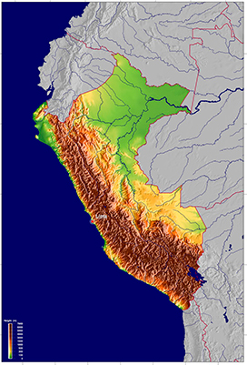
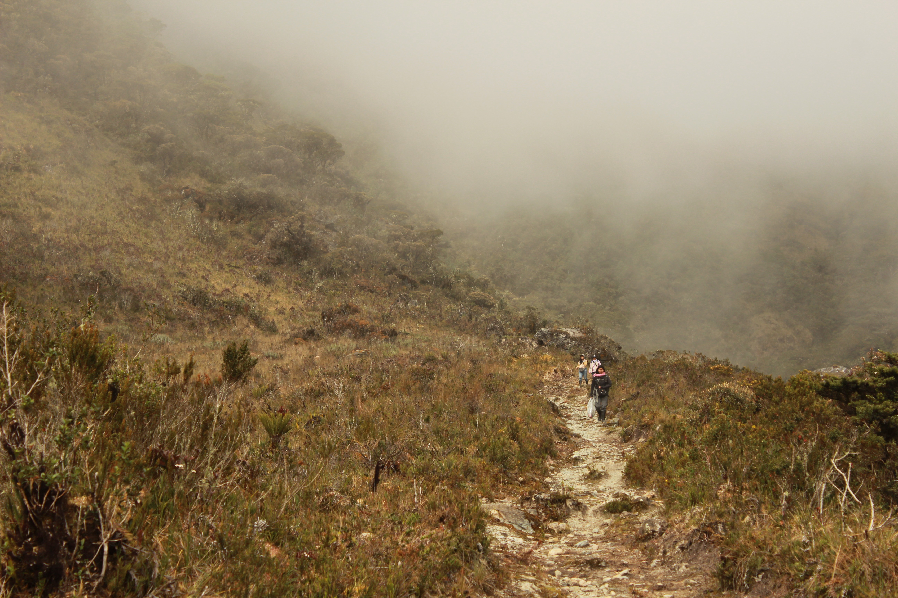

Tipos de Vegetación del Perú
Perú es uno de los países más biodiversos del mundo, gracias a su geografía única que incluye los Andes, la Amazonía y la costa del Pacífico. Esta variedad de climas y altitudes ha generado diversos ecosistemas, cada uno con su flora y fauna. Desde frondosos bosques amazónicos hasta pastizales andinos y colinas costeras con neblina, los paisajes peruanos albergan tipos de vegetación adaptados a las condiciones locales.
Las siguientes fotos muestran la diversidad de tipos de vegetación y áreas donde se han reportado briofitas.


Bosques montanos de vertiente occidental, restringidos en el norte de Perú llegando a Ecuador y Colombia. Uno de los ejemplares tipo de Frullania heinrichsii se encontró aquí.

Zona límite de bosques montanos de vertiente oriental con pastizales altoandinos, aproximadamente 3300 m. Foto: Diego Paredes-Burneo.

Bosques de queñuales, dominados por especies de "queñua" (Polylepis spp.), que se presentan como parches o relictos en zonas altoandinas entre 3500 y 4900 m.
❮
❯